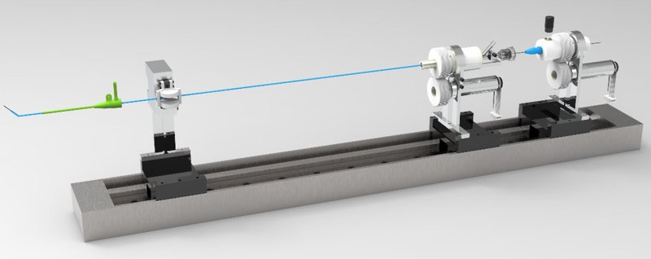

Academic bedside robots · ciomp_chen2025
CIOMP isomorphic
CIOMP leader-follower isomorphic vascular interventional surgical robot

1 / 3


- Family
- Academic bedside robots (academic)
- Devices
- catheter and guidewire (catheter delivery mechanism, catheter rotation mechanism, guidewire operation mechanism; chen2025_design Fig. 1 labels)
- Degrees of freedom
- N.R. (catheter delivery + rotation, guidewire delivery + rotation shown)
- Push
- Other drives
- Twist
- Other
- Tested up to
- Phantom
- Sim-to-real
- None found — No simulation-trained controller found for this robot.
Testing
- Highest level
- Phantom
- What was tested
- intervention task in a human vascular model with 4 volunteers; CUSUM learning curves (chen2025_design abstract, Fig. 7)
- Key numbers
- leader-follower delivery error < 1 mm, guidewire rotation error < 0.3 deg; operators mastered the task within 10 trials; operator-experience classification accuracy 94% (chen2025_design abstract)
Mechanism
- Push (translation)
- other: catheter between upper and lower pressing plates with an electric clamp; guidewire via operating handle on a screw drive (Fig. 1 labels)
- Twist (rotation)
- gear drive (driving/driven gears, rotating motor; Fig. 1 labels)
- Device range
- N.R.
- Target anatomy
- human vascular model
Sensing and interface
- Force sensing
- N.R. in abstract; force channels in the four-channel bilateral controller (Fig. 2)
- Leader and haptics
- isomorphic leader with identical structure; four-channel acceleration-based bilateral control with DOB/RFOB (abstract, Fig. 2)
- Imaging
- N.R.
- Sterility
- N.R.
Size
- Footprint (mm)
- N.R.
- Mass (kg)
- N.R.
Simulation
- Simulation model
- none found
- Sim-trained controller
- none found
Versions
- Lineage
- single version (chen2025_design)
Sources
- Design and Evaluation of a Leader–Follower Isomorphic Vascular Interventional Surgical Robot · Actuators, 2025 · doi:10.3390/act14010029 [chen2025_design]
Notes
- Notes
- Not in any earlier list.
This record
- Read level
- abstract — abstract + figures
- Picture
- chen2025_design Fig. 1 centre panel, https://mdpi-res.com/actuators/actuators-14-00029/article_deploy/html/images/actuators-14-00029-g001.png (page https://www.mdpi.com/2076-0825/14/1/29) ↗ — licence: CC BY 4.0; grade B
- Picture changes
- cropped to the grey render panel; not upscaled
- Found by
- gap: Gap searches for robots the other searches missed.
- Data
- JSON · YAML:
records/robots/ciomp_chen2025.yaml - Correction
- Suggest a correction [repository not created yet]